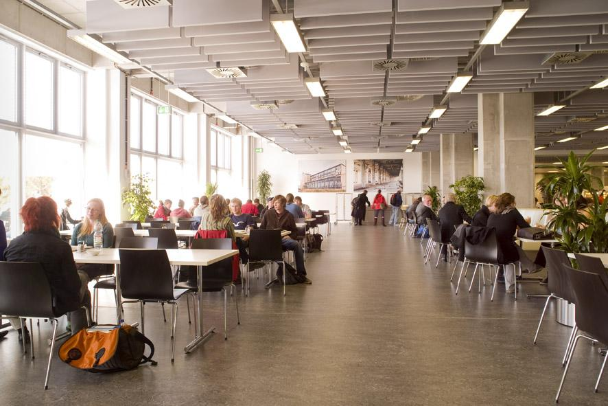

Die Mensa am Wilhelminenhof
Die beste in ganz Berlin!
Öffnungszeiten: Mo – Fr 7.30 – 14.30 Uhr (Mittagstisch: 11.00 – 14.30 Uhr) Gebäude G liegt direkt an der Spree. Gleich im Erdgeschoß befinden sich die für Veranstaltungen genutzten Räume G 007 und G 008 sowie die beiden Hörsäle G 001 und G 002, außerdem die Mensa und die Cafeteria des Studentenwerks. Der Zentraleinrichtung Hochschulbibliothek gehören die 1. Etage, dem Fachbereich 1 die weiteren Etagen.